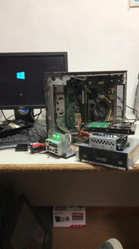

Some of my projects
I have worked on some school and personal projects. using markup
languages such as HTML and CSS, also programming languages such as
Java, Javascript, SQL and PHP, I have used some other text editor
and development environments such as Visual Studio Code, Pgadmin
and NetBeans
Below I show you some of them
- page about adoption center
- CRUD made in Java to manage best-selling products, update prices and returns, all linked to a SQL database managed in pgadmin4
Work experience
During my 5-month work internship, I was responsible for updating software and hardware on slightly older devices. Additionally, I also managed device control through an Active Directory domain, as well as overseeing structured Ethernet cabling and assigning IP addresses to the devices.
Education
I finished the intermediate degree in microcomputer systems and networks at the CIFP Majada Marcial, Fuerteventura, then I finished the first year of web development at IES Vigan, I am currently studying the 2nd year at the IES Juan de Garay, Valencia